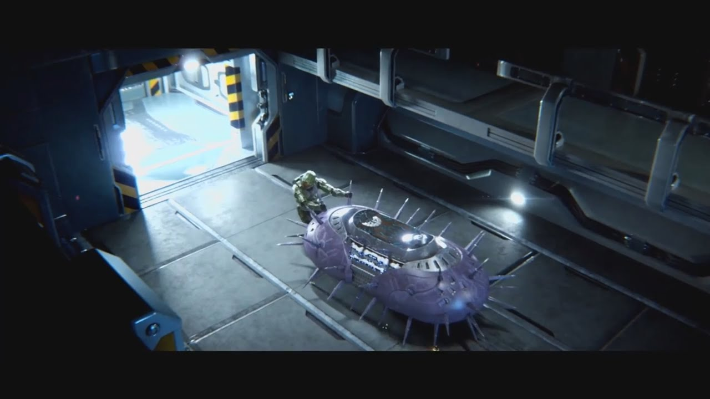

Audio
This project is my most recent original MIDI keyboard music piece, mixed and created entirely by myself. The project entailed finding a media clip and replacing the audio with our own. However I decided that the SFX in the video were something that would be good to work off of and thus I left the original SFX in with my own music as what could be considered my work.